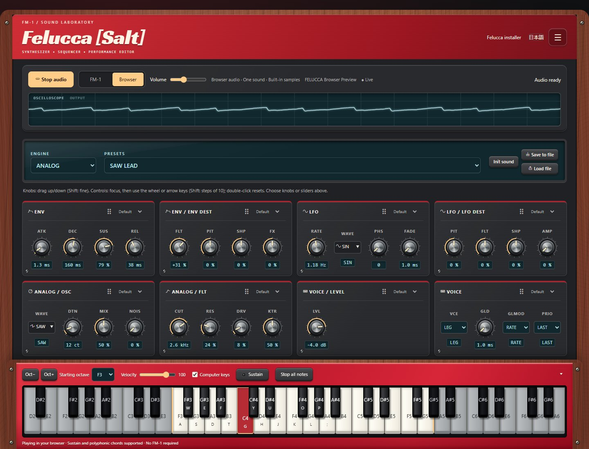
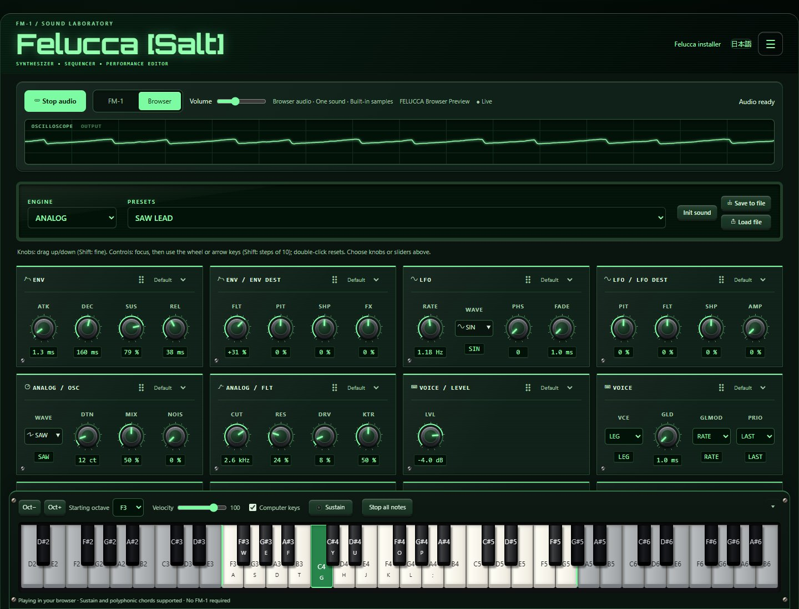
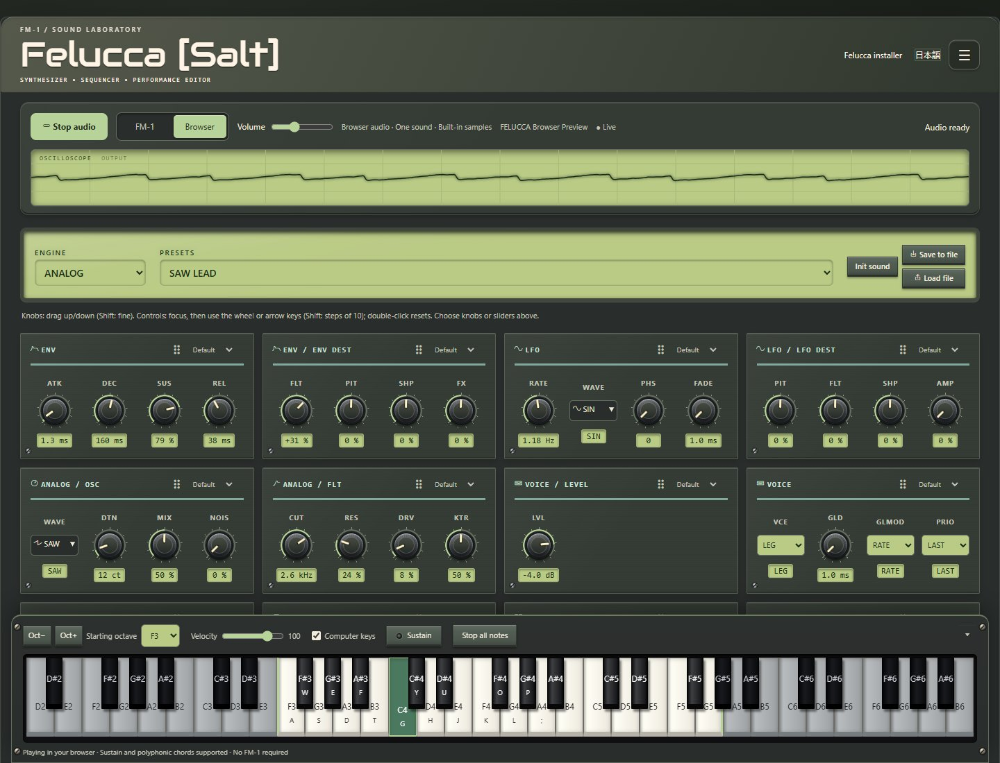
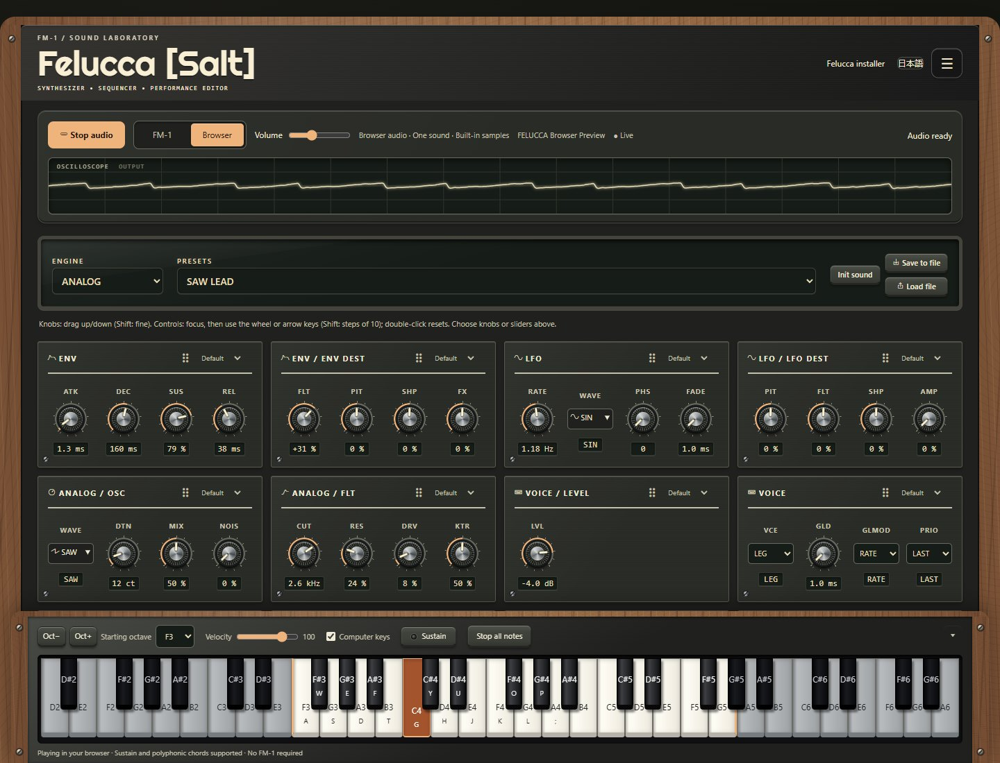
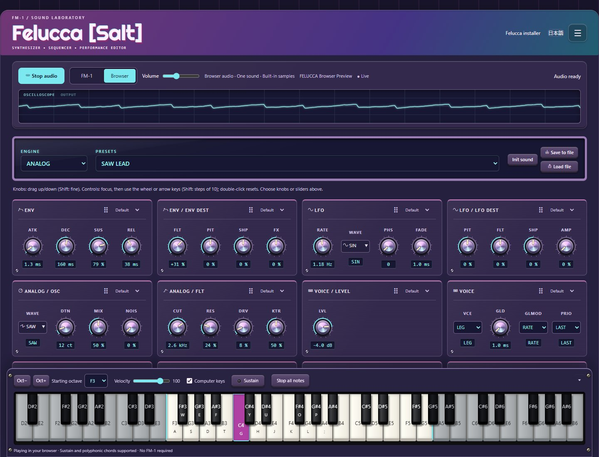
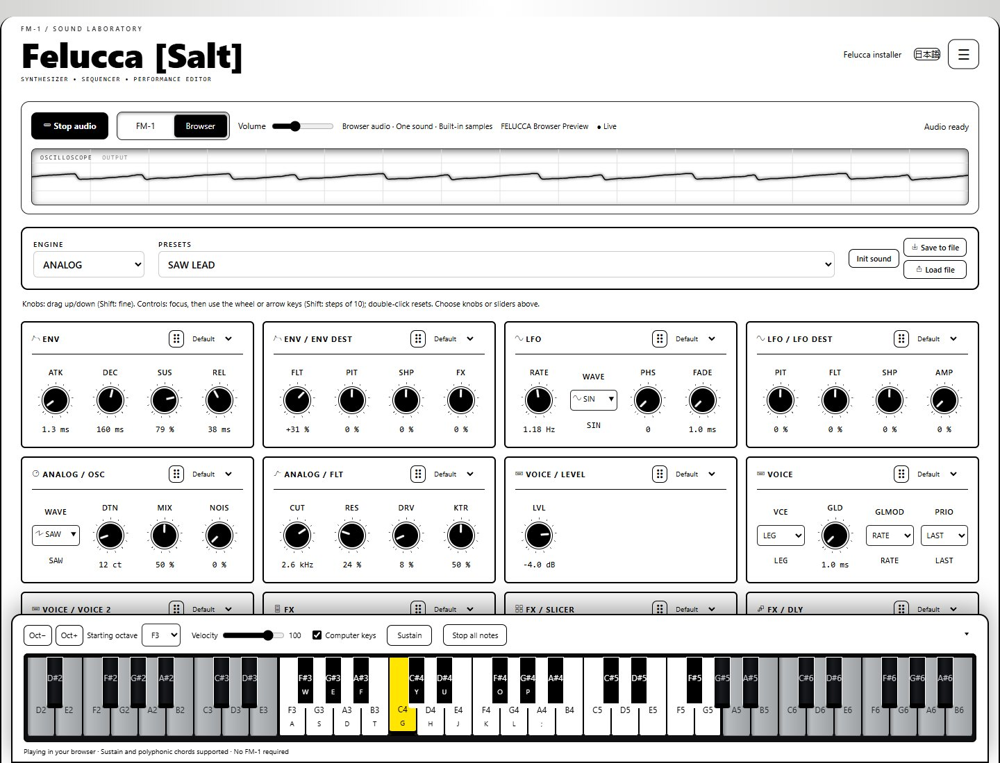

Felucca [Salt]
SMALL INSTRUMENT. BIG POSSIBILITIES.
A little synth.
A bigger playground.
Play a sound in your browser or connect your FM-1. A hands-on editor, expressive MIDI, and twelve looks to make it yours.
New on the website
These updates are available now in the editor. No firmware update is needed for browser sound.
- FM-1 / Browser mode switch. Select Browser to start the local sound engine, or FM-1 to edit your connected instrument. Switching back stops browser playback.
- A synth without the hardware. Nine Felucca engines, 54 factory presets, built-in samples, live sound controls, chords, sustain, and a separate browser volume.
- Live oscilloscope. A full-width display follows the actual browser audio output and matches your selected theme.
- Twelve hardware-inspired themes. Stage Red, Matrix, vintage DX, Model D, Chocolate, Vaporwave, and more, with light/dark modes and a dedicated high-contrast theme. Wood, molded surfaces, screws, and display fonts give each its own character.
- Your controls, your layout. Choose knobs or sliders per Sound card, drag cards to rearrange them, and switch to full width from the menu.
- A keyboard that stays within reach. Play with your mouse, touch, or computer keys. The docked keyboard starts at the FM-1's F3–G5 range, adds shaded extra keys on wide screens, and folds into a tray.
Browser mode currently plays one sound. Sequencing, track mixing, sample uploads, and projects are not connected to browser playback yet. Save sound edits with Save to file. The full device editor remains available in FM-1 mode.
Open editor and select Browser →






Actual editor screenshots. Select an image to view it full size.
On the FM-1: Salt13 firmware features
Included in 0.9-salt13, building on the original Felucca firmware:
- 3.5 mm TRS MIDI input. Play through USB or TRS, with TRS enabled by default.
- Expressive playing. Sustain pedal, pitch bend with adjustable MIDI bend sensitivity, mod wheel, and MIDI reset and all-notes-off handling.
- External MIDI sync. Select internal, USB, or TRS clock, with MIDI Start, Stop, and Continue. Includes keremimo's clock-sync contribution.
- More screen colors. Twenty palettes in total, including eight light palettes and high-contrast options for both light and dark backgrounds.
- Clearer display. Select regular or bold text, with distinct track colors and status colors for playback, recording, and MIDI activity.
- Preset favorites. Star factory presets and saved user sounds, then browse all sounds or favorites only. Small favorites lists show each entry once; stars and the filter are saved.
- MIDI monitor. Choose Off, Events, or Notes. The bottom-right of the waveform shows the latest event or currently held notes and chords, including notes held by the sustain pedal.
- New web editor controls. Settings > Device display controls palette, font, and monitor mode. Library > Device presets manages favorite stars and filtering. Settings > GLOBAL selects the clock source.
Install Salt13 and reconnect the editor to use the new web controls. Favorites bookmark sounds; save edited sounds to a user slot to keep your changes.
Felucca [Salt] by Chance Roth (@ChanceTheMaker).
Based on Felucca by Leo Kuroshita (@kurogedelic), Hügelton Instruments.
Font: Terminus (Dimitar Toshkov Zhekov, SIL OFL 1.1). Samples: Versilian Studios VSCO-2 Community Edition and VCSL (CC0 1.0), and the Hügelton Sample Pack (© Hügelton Instruments, not CC0).
Test build. M-VAVE and FM-1 are trademarks of their respective owners.
Download this release's source code
github.com/hugelton/Felucca